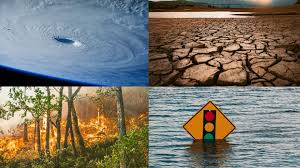

El Fenómeno de "el Niño" es un evento climático que se genera cada cierto número de años por el calentamiento del océano Pacífico. Sus efectos son notables en el norte de la región Pacífica, los departamentos de la región Andina y en los departamentos de la región Caribe. Este se presenta en zonas costeras o paises con cercania al mar.
Este fenómeno natural es la fluctuación más poderosa en el sistema climático en cualquier parte de la Tierra. La última vez que se formó El Niño fue en 2016 y sus efectos se dejaron sentir en todo el mundo.
El Niño suele darse más frecuentemente que La Niña y ambos pueden durar la mayor parte del año, o incluso más.El Niño es parte de un fenómeno que tiene que ver con variaciones tanto en el océano como en la atmósfera", explica Nieto. Si lo resumimos mucho, podríamos decir que El Niño es la fase cálida de un evento climatológico y La Niña, su fase fría. Pero es mucho más complicado que eso. Son fases opuestas de un complejo patrón meteorológico tan poderoso que puede alterar la temperatura global y causar efectos atmosféricos muy extremos en todo el planeta.
Es más fuerte mientras menor es su duración, y su mayor impacto en las condiciones meteorológicas se observa en los primeros 6 meses de vida del fenómeno. Se presenta con menos frecuencia que el Niño y se dice que ocurre cada 3 a 7 años. Según la NOAA desde 1950 se han presentado 8 fenómenos de la Niña. En cambio del niño ha habido 40 eventos Fuertes y Muy Fuertes en 475 años, es decir uno cada 9 años